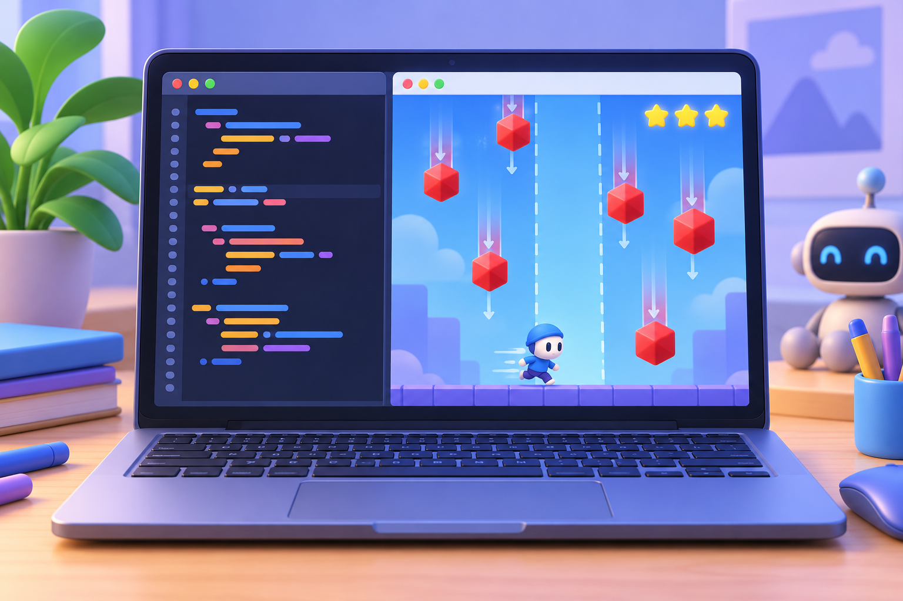

Урок 9 із 10 · Рух, умови й зіткнення
Гра «Уникай перешкод»
Керуємо гравцем, рухаємо перешкоди та перевіряємо зіткнення. Кожне успішне ухилення може додати бал.

🎯 Що навчимося робити
Поєднати керування, автоматичний рух, межі екрана та умову завершення гри.
Працюємо крок за кроком
- Запустіть гру й рухайте платформу стрілками ліворуч і праворуч.
- Знайдіть, де перешкода змінює y та повертається нагору.
- Змініть fall_speed і порівняйте складність.
- Додайте рахунок за кожну перешкоду, яку вдалося оминути.
Як перейти від сторінки до запуску коду
- Натисніть «Копіювати код» і скопіюйте приклад.
- Відкрийте ePython, вставте код у редактор і натисніть «Виконати».
- Для графічного вікна PyGame Zero та імпорту PNG відкрийте PGZ Studio. У ній є кнопки «Виконати» й «Імпорт ресурсів».
⌨️ Код для дослідження
Скопіюйте код, відкрийте середовище та змініть хоча б одне значення. Порівняйте результат.
Python · PyGame Zero
import pgzrun
import random
WIDTH = 600
HEIGHT = 400
player_x = WIDTH // 2
obstacle_x = random.randint(20, WIDTH - 20)
obstacle_y = -20
score = 0
game_over = False
def update():
global player_x, obstacle_x, obstacle_y, score, game_over
if game_over: return
if keyboard.left: player_x = max(25, player_x - 5)
if keyboard.right: player_x = min(WIDTH - 25, player_x + 5)
obstacle_y += 4
if obstacle_y > HEIGHT:
obstacle_y = -20
obstacle_x = random.randint(20, WIDTH - 20)
score += 1
if abs(player_x - obstacle_x) < 35 and obstacle_y > HEIGHT - 55:
game_over = True
def draw():
screen.fill((25, 35, 60))
screen.draw.filled_rect(Rect((player_x-25, HEIGHT-45), (50, 20)), (70, 190, 230))
screen.draw.filled_circle((obstacle_x, obstacle_y), 16, (245, 90, 100))
screen.draw.text("Бали: " + str(score), (15, 15), color="white", fontsize=28)
if game_over: screen.draw.text("Гру завершено", center=(WIDTH//2, HEIGHT//2), color="white", fontsize=38)
pgzrun.go()🧩 Перевір себе інтерактивно
Завдання
Перешкода не повертається нагору. Яку умову та які дві змінні перевірити?
Спочатку оновлюємо рух, потім перевіряємо події, після цього показуємо актуальний стан.
Перевірте if obstacle_y > HEIGHT. Усередині умови задайте obstacle_y = -20 і нове випадкове obstacle_x.
Розташуй кроки за порядком
Перетягніть картки або натискайте ↕, щоб змінити їхнє місце.
Оновлювати координату перешкоди
Перевірити вихід за край і зіткнення
Показати рахунок або завершення гри
Рухати гравця клавішами